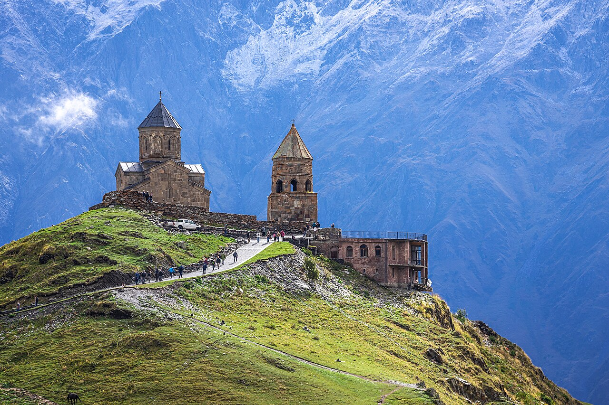
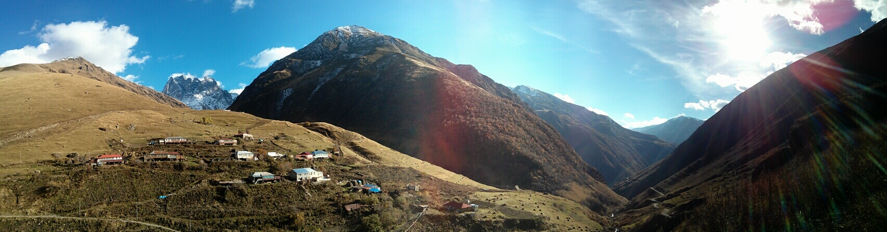

☕ Early breakfast at the cottage
Vista Cottage terrace Map
Start the day before the tour buses. Stuff something into a daypack — water, a fleece, snacks, sunglasses. The sun is sharp at altitude.

The mountain you saw from the cottage last night is the one you climb halfway up today. The 14th-century church on its shoulder is one of the most photographed buildings in the country, and earns it — pyramid of stone, pyramid of ice behind, nothing else in the frame.
Start the day before the tour buses. Stuff something into a daypack — water, a fleece, snacks, sunglasses. The sun is sharp at altitude.
Cross the river to Gergeti, follow the forest path up — it switchbacks through pines, opens onto meadow, then climbs a final shoulder to the church at 2170 m. Take it slow; the altitude is real. If the legs say no, share a 4WD up (~40–60 GEL return) and walk down — that's the popular hybrid.
Step inside the small candle-lit nave; walk the path around to the back for the best Kazbek view. If you can stay till the buses leave (around 13:00), the silence at the top of the meadow is something to remember.
Knees willing, walk back the way you came — downhill is the easy half. Or share a jeep down with whoever's at the parking lot.
You've earned a proper meal. Order a bowl of soup (chikhirtma if it's on), a bottle of mineral water, and something cheesy — sulguni-filled bread, or a small khinkali plate.
An outdoor sculpture park hidden in a side valley — a Georgian artist has carved the heads of his heroes from the cliff: Pirosmani, Shota Rustaveli, Aleksandre Kazbegi, an apostle or two. Quiet, quirky, photogenic. Pair with a short walk up the valley for the Sno fortress ruins.
If the season has opened the gravel road into Juta (~1980 m), do the gentle 3-hour out-and-back to the Chaukhi wall — wildflowers, a small cafe at the trail end, the dolomite spine of Chaukhi over you. Don't attempt the pass — still snowed-in this early. Check at the visitor centre before driving up.

The Rooms Hotel sits above town with the best Kazbek view in Stepantsminda — pricier than the village spots, but the terrace at sunset is something. If you'd rather a quieter local night, go to Khevi.
Late spring at 1740 m means a dark sky most nights. Lie back on the terrace; if the air is clear you can sometimes see the Milky Way directly overhead. Layer up — it gets cold fast after sundown.